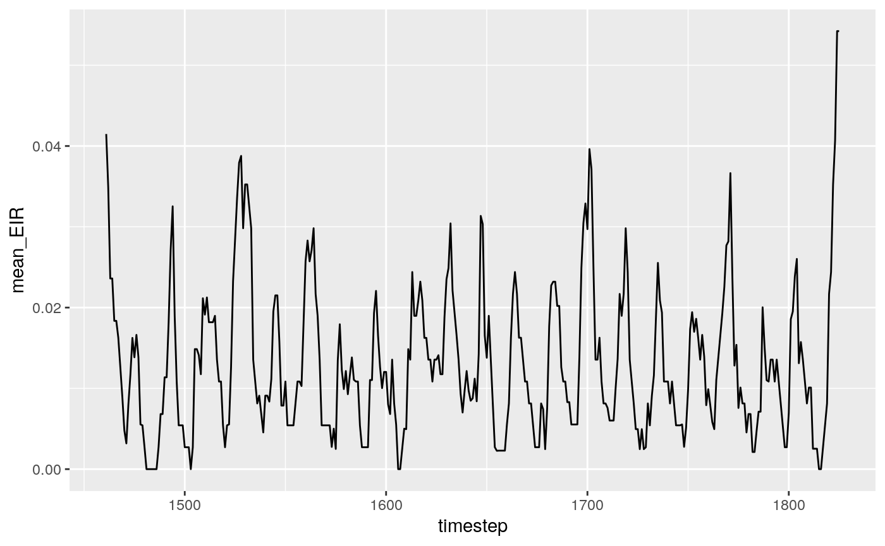
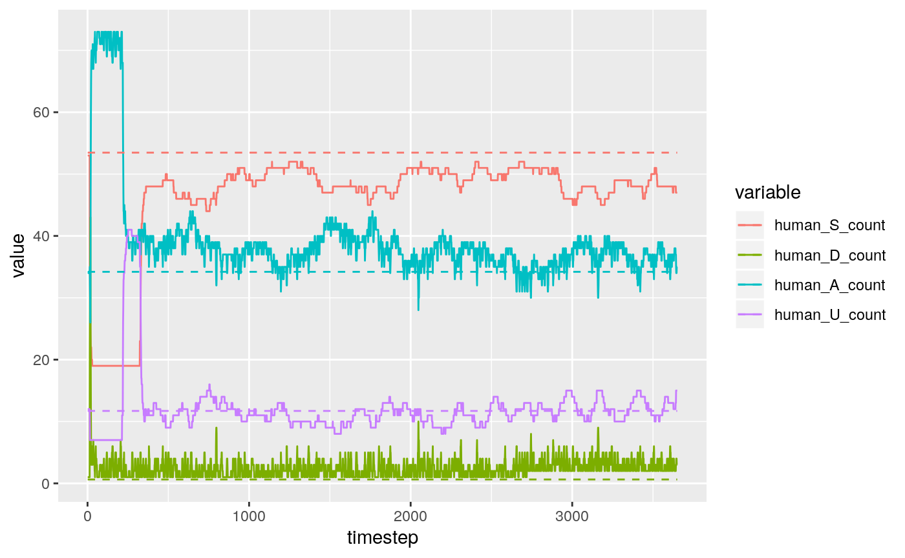

Validation.RmdThis vignette demonstrates that the IBM is consistent with the independently written equilibrium solution. Using the principle of triangulation, we provide evidence for the validity of this model.
Let’s start by parameterising the model with the default parameters from the equilibirium solution code.
This involves:
year <- 365
sim_length <- 10 * year
human_population <- 100
remove_keys <- function(x, n) { for (name in n) { x[[name]] <- NULL }; x }
jamie_params <- load_parameter_set("Jamie_parameters.rds")
params <- remove_keys(
jamie_params,
c(
's2',
'rT', # makes sense
'rP', # makes sense
'tl',
'g_inf',
'fd0',
'aA',
'aU',
'b1',
'PM',
'tau',
'f',
'Q0',
'cd_w',
'cd_p',
'cT',
'dE' # not sure if this translation works
)
)
simparams <- translate_jamie(params)
simparams[['human_population']] <- human_population
#add blood meal rates
simparams[c('av1', 'av2', 'av3')] <- jamie_params$f * jamie_params$Q0Next we want to estimate the yearly EIR. This is an input parameter for the equilibrium solution, but for the IBM it’s an emergent statistic…
output <- run_simulation(5 * year, simparams)
# Estimating EIR for the final year of the model
ggplot(
subset(output, output$timestep > (4 * year)),
aes(x = timestep, y = mean_EIR)
) + geom_line()
EIR <- sum(output$mean_EIR[output$timestep > (4 * year)])
print(paste("Estimated final year EIR to be", EIR, sep=" "))
#> [1] "Estimated final year EIR to be 4.80151395156138"Next, we calculate the equilibrium state proportions for each human state:
# Calculate equilibrium
eq <- human_equilibrium(EIR = EIR, ft = 0, p = jamie_params, age = 0:100)
state_props <- colSums(eq$states[,c('S', 'D', 'A', 'U')])We run our IBM model initialised with these state proportions to accelerate its convergence:
simparams$s_proportion <- state_props[['S']]
simparams$d_proportion <- state_props[['D']]
simparams$a_proportion <- state_props[['A']]
simparams$u_proportion <- state_props[['U']]
equilibrium <- data.frame(
timestep = seq(sim_length),
human_S_count = rep(state_props[['S']] * human_population, sim_length),
human_D_count = rep(state_props[['D']] * human_population, sim_length),
human_A_count = rep(state_props[['A']] * human_population, sim_length),
human_U_count = rep(state_props[['U']] * human_population, sim_length)
)
print(system.time({output <- run_simulation(sim_length, simparams)}))
#> user system elapsed
#> 482.669 0.572 484.878
ggplot(
melt(output[c(
'timestep',
'human_S_count',
'human_D_count',
'human_A_count',
'human_U_count'
)],
'timestep'
),
) + geom_line(
aes(x = timestep, y = value, group = variable, color = variable)
) + geom_line(
data = melt(equilibrium, 'timestep'),
aes(x = timestep, y = value, group = variable, color = variable),
linetype = 'dashed'
)